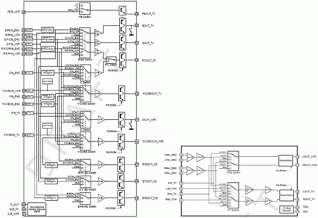
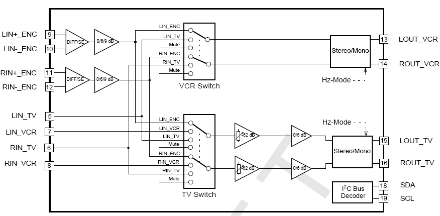
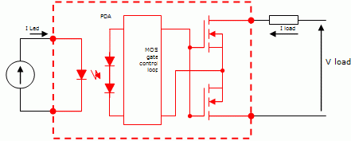
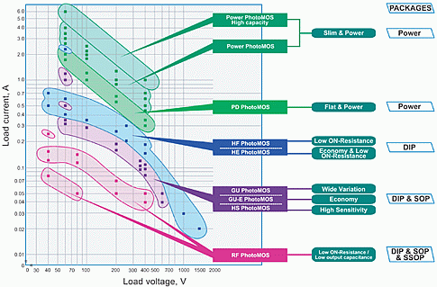
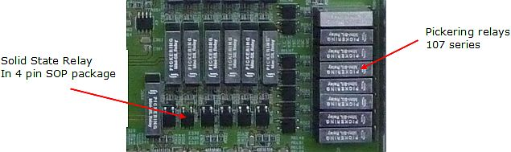
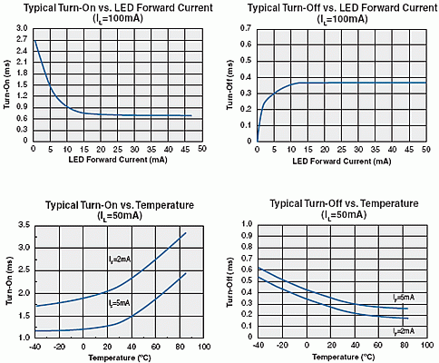
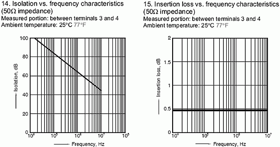

Use of Solid State Relays as a Replacement of Mechanical Relays for DUT Board Design
Hervé Brocheton, Verigy
Paper-ID: 120509 April 2010
Abstract
The test of complex mixed signal devices in massive SmarTest Work Center environment usually requires adding many relays on the production DUT boards due to limited number of tester analog resources versus device requirements.
Even though the relays are widely used in production they remain a possible cause of DUT board failure over time and can become a real problem when a very large number of relays is required on the board with possible space limitation, utility supply power limitation or even current limitation per utility-line when multiple relays are controlled by the same resource.
In many cases the solid state relays can be used as a replacement of mechanical relays with significant advantages: reduced package size, improved reliability, low current consumption, and faster switching time.
However, designing a DUT board with solid state relays also requires some special considerations and special care. Parameters like output capacitance, ON resistance, and isolation must be carefully reviewed in order to determine the possible field of application and limitations of these relays.
The goal of this article is to clarify the field of application of the solid state relays in the mixed signal test arena and highlight the possible traps to avoid. The article is mainly based on DUT board design experiences built for production test of audio/video switching devices in quad-sites.
Key Words: Audio/Video switches, mixed signal test, PhotoMos, DUT board, SSR, EMR.
Test hardware complexity versus multisite test parallelism
In semiconductor test, SmarTest Work Center testing is established as a very efficient way to reduce cost of test. For low pin count consumer devices, SmarTest Work Center testing has become a requirement over time due to the increasing pressure to continuously reduce cost on these devices.
Multisite testing reduces cost-of-test by allowing a more efficient use of the test system, but as a drawback, it also increases complexity and cost of the test hardware. Basically, the DUT board and probe card complexity scales with test parallelism. For test of mixed signal devices, usually a lot of components like buffers, amplifiers, and relays are required on the test hardware to interface the ATE resources with the DUT. Increased parallelism leads to more complex DUT boards and probe cards, and introduces new challenges related to the design and the reliability of the test hardware. Even though it is getting more complex, the test hardware must be affordable and must remain reliable over time. Also, as test parallelism and number of on-board components increase, the test hardware fixture size and the capability of the tester to control all these components becomes critical.
Thus, in this context solid state relays can be a good alternative to mechanical relays.
Requirements for Audio/Video switches devices testing
Audio/Video switching devices are a good example of mixed signal devices with low pin count, high parallelism during production test, and very high pressure to reduce cost of test. Even though these devices have a very low average sales price, they require use of high-end mixed signal instruments in production test to guarantee the full device specifications and high quality.
Figure 1 below shows the block diagram of a typical device with 12 video inputs, 9 video outputs, 6 audio inputs, and 4 audio outputs.


Figure 1: Audio/Video switch device block diagram (single chip) [1]
The test of each audio and video path includes some challenging measurements like bandwidth up-to 100MHz for HD video paths, SNR, THD, cross-talk up-to 50MHz, and some accurate DC measurements such as input or output resistances, leakages, video clamp levels, and clamping currents.
For cost reasons, it is not possible to assign one generator to each input pin or one digitizer to each output pin. As a consequence, a switching solution with outstanding electrical performance is required on the test hardware. The quality of this switching solution is a must to ensure signal integrity while its flexibility allows for more choices in applicable test conditions.
Audio/video switching devices are usually tested quad-site on a V93000 tester with two MBAV8 (4S/4M + 8M). Multiplexing of DC resources and analog resources is required on all the pins to fully cover the test plan. In these conditions, it is required to have on the DUT board approximately 250 switches with several buffers and signal amplifiers. Usually the switches are realized by use of mechanical-reed-relays. However, for such a high number of switches, the test hardware designer is facing DUT board space restrictions and current limitation of the V93000 utility power supply.
It is then required to realize some of the switches with a different solution in order to fit within the DUT board space and keep the current consumption on the utility power supply within an acceptable level. By optimizing the choice of switching solution between mechanical and solid state relays, we are able to translate the need for 250 switches into 108 mechanical relays (single or double throw) and 52 solid states relays resulting in a 20% space saving on the DUT board and a 25% power saving compared to a solution fully based on mechanical relays. On top of this, we improve hardware reliability and we can fine tune the performance of the selected solution to the test needs.
Solid state relays principle of operation
The Figure 2 below shows the typical architecture of a solid state relay (SSR).
The principle of operation of a SSR using the voltage driving method is the following:
- When current flows to the input terminals the LED emits light.
- The light reaches a photoelectric diode array (PDA) which converts it into a voltage.
- This voltage passes through a control circuit and charges the MOSFET gate on the output.
- When the MOSFET gate reaches a threshold voltage, the MOSFET begins to conduct and turns on the load.
- When current stops flowing to the input terminals, the internal control circuit of the photoelectric component discharges the gate of the MOSFET.
- When the MOSFET gate voltage falls below the threshold level, the MOSFET stops conducting and immediately turns off the load.

Figure 2: Solid state relay architecture [2]
A large choice of solid state relays is now available to address multiple types of applications and cover a wide range of load currents and load voltages.

Figure 3: Matsushita PhotoMos selection chart [3]
Solid state relays provide the advantages of almost infinite switching life, bounce-free operation, immunity to EMI, higher operating speeds, low level control signals, small package size, and multi-function integration. These advantages can save the design engineer board space, component count, time, and money while improving DUT board reliability.
In multiple cases, solid state relays now serve as a viable and superior option to mechanical relays. Most of the time, for semiconductor test DUT board design, the ON-resistance and the output capacitance will be the key parameters for device selection.
Benefits of solid state relays for test hardware design
Size advantage versus mechanical relays
The internal components of mechanical relays control the overall package dimensions. Because there are mechanical parts (like coils) within the mechanical relays, the package size is limited by the physical dimensions of the functional internal components.
By contrast, solid state relays are only limited by the size of the semiconductor components. As a consequence, they are manufactured in much smaller packages that continue to shrink as semiconductor technology develops smaller and smaller components.
Solid state relays have a clear size advantage over mechanical relays especially when single pole single throw (SPST) relays are considered. The picture below shows a portion of the DUT board for test of audio/video switches devices with a mix of solid state relays (AQY212GS) and mechanical relays (Pickering 107-1-A-5/1D):

Figure 4: DUT board with 4pins-SOP SSR near-by Pickering 107 relays
In this example, the 4 pin SOP package (4.3mm x 4.4mm) reduces by a factor of three the switch footprint on the DUT board compared to the Pickering relay package (19.1mm x 4.8mm).
In the general case, the physical size comparison of different solid state relays and mechanical relays shows that "area per pole" varies typically from 10mm2 to 55mm2 for solid state relays and from 36mm2 to 116mm2 for the smallest mechanical relays [4].
Thus a 2 to 3 size ratio advantage can usually be realized when choosing solid state relays over mechanical relays.
Solid State Relays reliability
Solid state relays exhibit a longer operational life because they have no moving parts to jam, degrade, or warp.
Even though mechanical relay specifications usually show lifetimes in the range of 107 to 109 operations, the real life time of such relays varies widely due to operating conditions like switching frequency and switching loads.
Reliability of solid state relays is determined by the time-in-operation, not the number of switching cycles. When solid state relays are used within the published specifications, MTBF can exceed a million hours. However, like mechanical relays, they are highly susceptible to surge currents and damage when used at signal levels above their rating. Although there are no metal contacts to weld, damage to the MOSFET can render the relay unusable.
Low power requirements
The V93000 tester offers a 5V utility power supply and up to 128 utility lines to supply and control DUT board components. This utility power supply is limited to 3A for compact and small testheads (CTH and STH, both with single 3A supply), and can reach 7A for large test head systems (LTH, made of one 3A supply plus four independent 1A supplies). The utility lines used for the control of relays have a current sink capability limited to 50mA. While these V93000 specifications are fine for most applications, they must be considered carefully when DUT board complexity increases.
Mechanical relays must energize a coil before switching takes place, and the coil energy must be maintained in order to hold the contact in the desired position. Very popular 5V relays like Omron G6Y require a 40mA coil current [5]. As a consequence, a utility line can directly control only one relay, and the 3A utility power supply will not be able to activate more than 75 relays at a time (assuming that the power supply current is fully dedicated to the relays!).
The situation is similar for the solid state relays: continuous current must be applied to the LED, but the required current is substantially lower, with recommended values in the range of 5mA to 10mA [6].
Solid state relays, with power consumption 4 to 8 times lower than mechanical relays, offer the capability to drive significantly more switches in parallel and reduce the heat dissipated in the DUT board. Each utility line can control up to ten solid state relays connected in parallel, but only one or two mechanical relays. So solid state relays are then also helping here to reduce the DUT board complexity by avoiding the use of on-board relay driver chips.
Mechanical relays |
Solid State Relays |
||
|---|---|---|---|
Reference |
Coil current (typ) |
Reference |
LED Op.current (typ) |
Omron G6Y |
40 mA |
Matsushita AQY212GS |
3 mA |
NAIS AGN2004H |
31 mA |
Matsushita AQY221N3M |
3.0 mA |
Teledyne 431D-5 |
40 mA |
Clare CPC1020N |
2.0 mA |
Note: LED operating current of solid state relays is often specified to values lower than 5mA, but an operating current in the range of 5mA to 10mA is usually preferred to keep good on/off switching time.
Thanks to lower operating currents and bounce free operation, solid state relays also help to reduce current spikes and noise on the DUT board during DUT testing.
Fast Turn ON / Turn OFF times
Solid state relays are also faster alternatives to mechanical relays because their switching time is dependent on the time required to power the LED on and off. Because they have no mechanical parts, solid state relays also provide bounce free operation.
However, the turn on and turn off times directly depend on the LED forward current. Data sheets for solid state relays usually recommend LED forward currents in the range of 5mA to 10mA. This range of values provides a good compromise between switching speed and power consumption from the 5V utility power supply.
Operating temperature also significantly influences the switching speed of the solid state relays. This is an important parameter to consider when defining the LED operating current to achieve the desired turn-on time, as the switching time approximately doubles from 25°C to 80°C.

Figure 5: SSR turn-on/off times versus temperature and LED forward current [7]
Cost
In the past, there has been a rather large gap between the price of a mechanical relay and the price of a solid state relay. But with continual advancement in manufacturing technology, this gap has been reduced dramatically, making the advantages of solid state technology accessible to all semiconductor test applications.
Performance limitations of solid state relays
Unfortunately, solid state relays also have some limitations that reduce the field of applications of these devices. The three main limitations for use in DUT board design are isolation, output capacitance, and on-resistance.
RxC factor limitation
Because the connection is made via a MOSFET transistor instead of a physical metal switch like in mechanical relays, solid state relays have higher path resistance. Although technology is continually improving, it is still not uncommon to find contact resistances of 10 to 100 Ohms in solid state relays, whereas electromechanical relays have ON resistance in the range of dozens of mOhms. The low ON resistance of mechanical relays allows greater load current and minimizes signal attenuation.
Mechanical relays have an output capacitance of less than a few picoFarads, whereas some solid state relays can have a capacitance greater than 20 pF. This higher capacitance becomes a significant issue in high frequency signals, and mechanical relays can be a better option for HF applications.
However, for low power applications like audio/video switches, a large choice of solid state relays is now available with either a good ON resistance or a low output capacitance. These solid state relays suitable for HF applications are characterized by their "RxC" factor. They are usually available in multiple versions with different compromise of ON resistance and output capacitance. For instance a device like AQY221N3V from Matsushita delivers an RxC factor of 5.5, with an output capacitance of 1pF (typ.) and ON resistance of 5.5 ohms (typ.) [6].
Therefore, when using solid state relays, the DUT board designer has to compromise between bandwidth performance (output capacitance) and DC performance (ON resistance).
Poor Isolation performance
Isolation performance of the solid state relays is a significant drawback compared to mechanical relays. While mechanical relays usually exhibit very high isolation, above 90dB at 10MHz, solid state relays have isolations lower than 50dB at 10MHz. At 100MHz the mechanical relays are still above 80dB, while solid state relays are already below 40dB.
This poor isolation performance at high frequency must therefore be taken cautiously into account in order to maintain the required DUT board performance level.
This isolation limitation makes the use of these relays challenging on video applications, and significantly limits their field of application when high frequency signals are required.

Figure 6: SSR typical isolation and isolation loss performance versus frequency [3]
Conclusion
For the testing of complex mixed signal devices like audio/video switches, the solid state relays can be a good alternative to mechanical relays. By providing smaller package size, lower shock and vibration sensitivity, much lower power consumption and longer electrical life time, the use of solid state relays helps the DUT board designer overcome DUT board space restrictions, meet utility power supply and utility lines current limitations, and deliver superior reliability.
The high reliability of solid state relays results in less DUT board failures in the production plants, avoids painful DUT board debug and repair in the production environment, and thus guarantees better system up-time in the long term. Faster switching time with no contact bounce or arcing is another advantage of solid state relays versus mechanical relays, and it helps reduce electrical noise on the DUT board.
However, solid state relays also have some disadvantages like higher ON resistance, higher capacitance, and poor isolation performance. For Audio/Video switches applications, requiring high speed frequency signals like SD and HD video, a very cautious choice between solid state relays and mechanical relays is then required.
We can expect that with further advancement in semiconductor fabrication and manufacturing technology, increased performance and functionality will emerge. Some solid state relays already have ON resistance values of less than one 1 Ohm and RxC factor less than 5. The future of solid state relays therefore looks bright in the semiconductor test DUT board design arena for a growing number of applications.
References
[1] STMicroelectronics, "STV6418 - Audio/Video Switch & SD/HD video filter" datasheet.
[2] EETimesAsia, June 2nd 2003,"Outlining operation principles of PhotoMos relays"
[3] Matsushita: PhotoMos Selector-Guide
[4] Clare, "Advantages of Solid-State Relays over Electro-Mechanical Relays", AN-145
[5] Omron, G6Y high-frequency relay datasheet
[6] Panasonic, Relay catalog - Part 2: PhotoMos & solid state relays
[7] Clare, CPC2317N datasheet
[8] Solid State Optronics, Application Note 040.